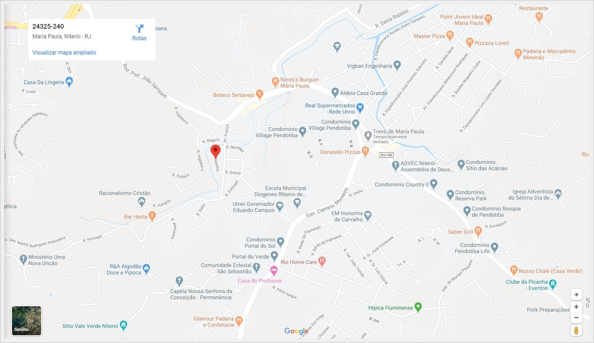

<div fxLayoutAlign="center center" id="contato-container-imagem">

  <div class="contato-container" fxLayout="column" fxLayoutAlign="center center"> 

    <div class="mapa">

      <div fxLayout="row" fxLayoutAlign="start start" >

        <div>
          <h2>Bem aqui <i class="fas fa-map-marked-alt"></i></h2>
        </div>
        
       
      </div>

        <div>
          <a fxLayoutAlign="center center" target="_blank" 
            href="https://www.google.com/maps/place/Maria+Paula,+Niter%C3%B3i+-+RJ,+24325-240/@-22.879255,-43.034723,16z/data=!4m5!3m4!1s0x998fba7bd6d561:0x4dbe63eaf2e6c5b7!8m2!3d-22.8791374!4d-43.0348213?hl=pt-BR">
            
          </a>

        </div>


    </div>

    <div fxFlexFill  fxLayoutAlign="center center"> 
      <div >
  
      </div>
      <div class="formulario-container" >
  
      </div>
    </div>

    
  </div> 
  
</div>

  